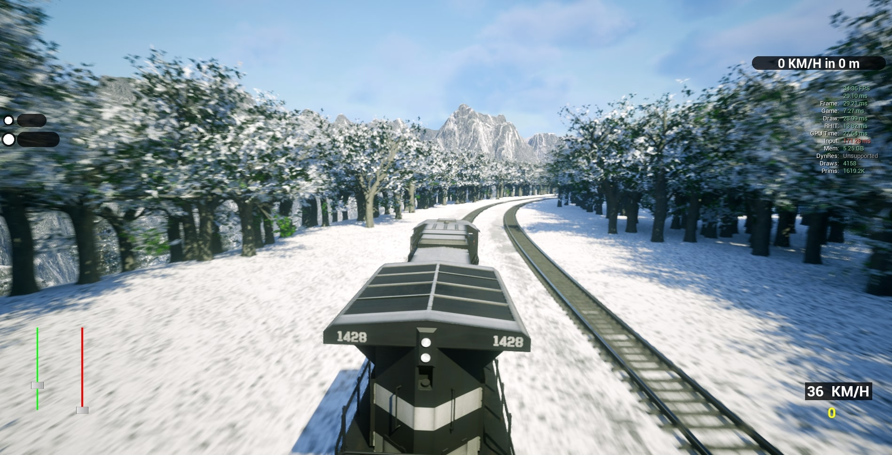
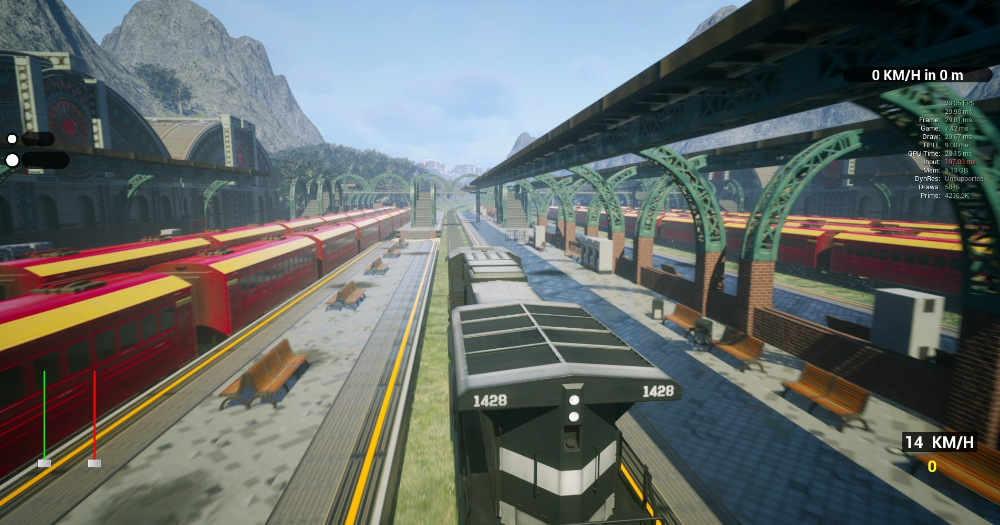
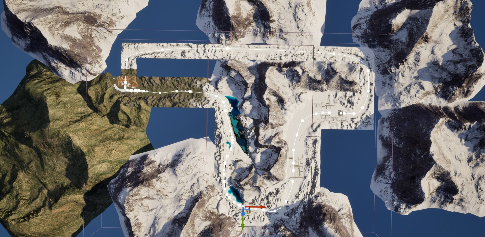
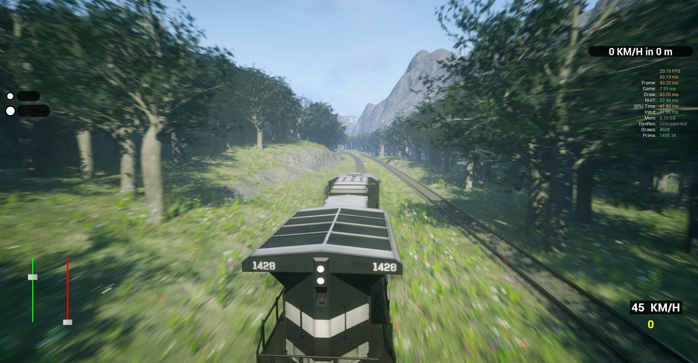
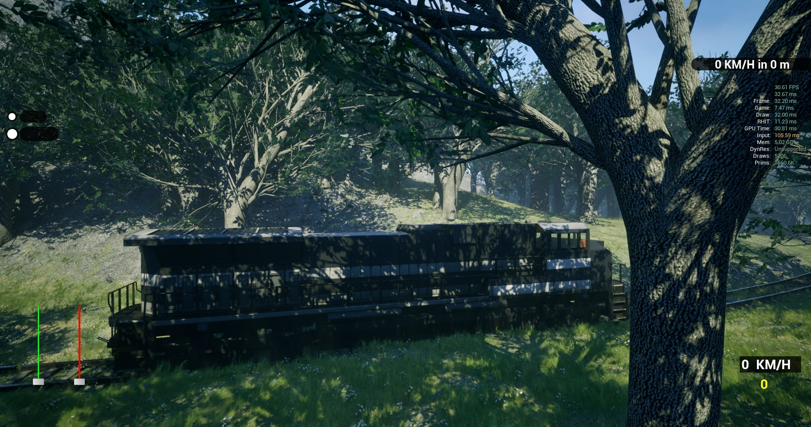
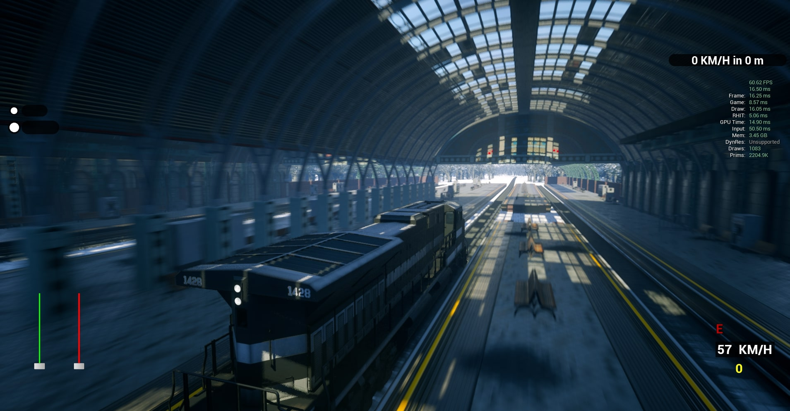
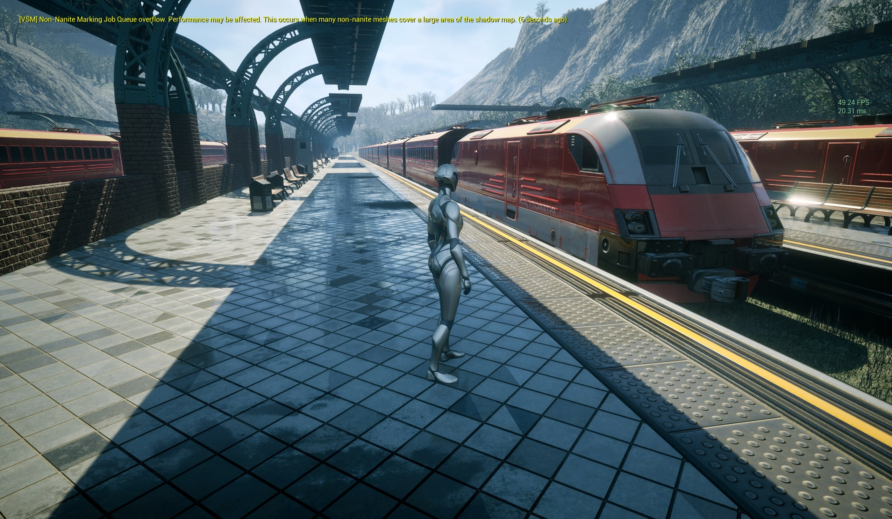
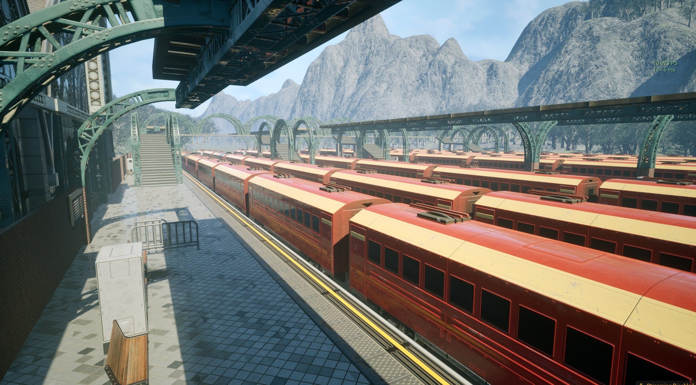
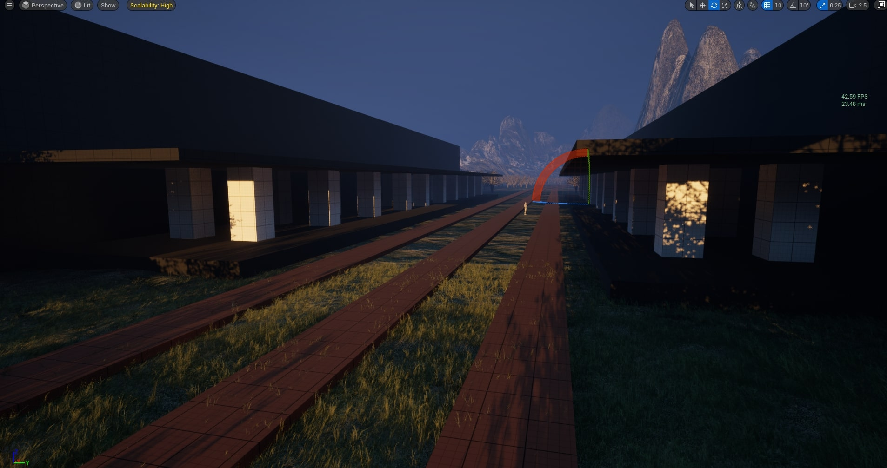

Level Design
Composed routes, landmarks, and transitions that reward attention.

A calm, readable simulation about making a route feel like a place worth traveling through.
The project began with the idea that management systems could still feel scenic and human. The player fantasy was to move between planning and watching, feeling responsible for a network while enjoying the world passing by.

Early layouts asked players to manage movement without giving them a clear sense of place. The design challenge was to make terrain, stations, and transitions communicate what mattered next.
Composed routes, landmarks, and transitions that reward attention.
Connected scheduling decisions to the physical shape of the world.
Used visual hierarchy so players could read the next decision quickly.
Sequenced route work around the clearest playable milestones.
Watched where players paused, rerouted, or lost the thread.
Made route intent visible across the team.
Milestones show where the route became a player-facing experience rather than just a finished asset.
Select a milestone to reveal the design insight.

Wireframe
FinalExpanding the network too quickly diluted the decisions. We focused on a smaller set of routes and made each junction carry a clearer consequence.
“I can drive here, but I cannot tell what this place is for.”
Production stayed focused by treating route readability and biome transitions as the highest-value work. Nice-to-have systems waited until the journey itself was coherent.
Lesson 01Orientation is part of atmosphere.
Lesson 02Players need a reason to take the scenic route.
Lesson 03Good pacing can be quiet.
I would keep the balance between planning and observation. I would improve the first route’s teaching moments and give players earlier reasons to care about the network they are shaping.
Back to all projects →Designed as the introductory level of the simulator, this environment takes players on a breathtaking journey from lush green valleys into the heart of a snow-covered mountain range. The level challenges players to adapt to dynamic terrain transitions, shifting weather, and precise control mechanics while maintaining a smooth and immersive train operation experience.





Building upon the foundation set in Level 1, this level focuses on creating a more complex and varied terrain layout that captures the essence of dense forest valleys. The goal was to design an environment that feels expansive yet intimate—offering players diverse scenery that transitions naturally between open clearings, dense woodland, and deep valley routes. The level introduces advanced spatial composition, environmental layering, and vertical variety to create an engaging sense of exploration throughout the route.
